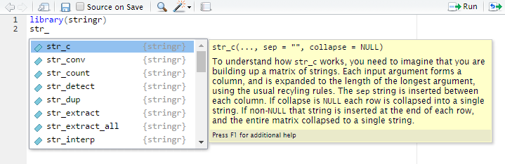

Stringr
Variáveis de texto são muito comuns nos bancos de dados e, geralmente, dão bastante trabalho para serem manipuladas. É muito comum encontrarmos colunas com categorias não padronizadas, como, por exemplo, uma variável Estado com “SP”, “sp”, “Sao Paulo”, “São Paulo” etc, todas indicando o mesmo estado.
O R possui várias funções para manipular textos (ou strings). No entanto, as funções do base não possuem uma interface consistente e cada uma tem a sua forma de passar os parâmetros, dificultando a programação durante a análise.
Pensando nisso, Hadley Wickham deu aquela força para a comunidade R e criou o pacote stringr, que possui uma sintaxe consistente, permitindo o usuário manipular textos com muito mais facilidade.
Vantagens do stringr em relação ao base
- Sintaxe unificada, o que auxilia na memorização e leitura do código.
- Todas as funções são vetorizadas.
- Construído sobre a biblioteca ICU, implementada em
CeC++. É uma garantia de resultados mais rápidos e confiáveis.
Regras básicas do pacote
- As funções de manipulação de texto começam com
str_. Caso esqueça o nome de uma função, basta digitarstringr::str_e apertarTABpara ver quais são as opções. - O primeiro argumento da função é sempre uma string ou um vetor de strings.
Curiosidade
Inicialmente, o stringr era um wrapper de funções do base. Depois disso,
surgiu um novo pacote stringi, com sintaxe similar ao stringr, mas funcionando como wrapper da biblioteca ICU. Wickham gostou tanto do pacote stringi
que decidiu reescrever o stringr como um wrapper do stringi.
Veja essa página para detalhes.
Conceitos básicos
Todas as funções do stringr começam com o prefixo str_. Isso ajuda na hora de
encontrar a função que você está procurando. No RStudio, digite str_ e
aperte TAB para visualizar a lista de funções com esse prefixo. Você pode verificar o que cada função faz até encontrar a que atende às suas necessidades.

Nesta seção, vamos utilizar as funções mais simples do stringr. Em seguida, vamos falar um pouco de regex e então veremos funções mais avançadas do pacote.
Antes de mais nada, instale e carregue o pacote stringr.
install.packages("stringr")
library(stringr)
str_length
A função mais simples do stringr() é a função str_length(). Esta função recebe como argumento um vetor de strings e retorna o número de caracteres de cada string. Repare que o espaço " " é considerado um caracter.
str_length("São Paulo")
## [1] 9
str_length(c("São Paulo", "Rio de Janeiro",
"Rio Grande do Norte", "Acre"))
## [1] 9 14 19 4
Note que str_length() é diferente de length(). O primeiro retorna o número de caracteres e o segundo retorna o comprimento do objeto. Isso fica mais claro no seguinte exemplo:
s <- c("São Paulo", "Rio de Janeiro",
"Rio Grande do Norte", "Acre")
str_length(s)
## [1] 9 14 19 4
length(s)
## [1] 4
A função str_length() retornou um vetor com o número de caracteres de cada elemento do vetor s, enquanto length() retornou o comprimento do vetor s.
str_to_upper, str_to_lower, str_to_title
Essas funções servem para modificar a caixa das letras. Veja alguns exemplos:
s <- "Somos a curso-r"
str_to_lower(s)
## [1] "somos a curso-r"
str_to_upper(s)
## [1] "SOMOS A CURSO-R"
str_to_title(s)
## [1] "Somos A Curso-R"
str_trim
É muito comum encontrar textos que vêm com espaços a mais, principalmente de dados provenientes de formulários em que cada usuário escreve da forma que prefere. Isso é um problema pois cria categorias diferentes para valores que deveriam ser iguais. Espaços antes e após o texto são especialmente chatos, pois pode ser difícil detectá-los.
s <- c("M", "F", "F", " M", " F ", "M")
as.factor(s)
## [1] M F F M F M
## Levels: F M F M
A função str_trim() ajuda removendo os espaços excedentes antes e depois da string.
string_aparada <- str_trim(s)
as.factor(string_aparada)
## [1] M F F M F M
## Levels: F M
str_sub
Não é raro você precisar obter uma parte fixa de uma string, como, por exemplo, manipular textos da forma:
s <- c("01-Feminino", "02-Masculino", "03-Indefinido")
Você pode querer apenas a parte final da string. Neste caso, pode usar a função str_sub().
str_sub(s, start = 4) # pegar do quarto até o último caractere
## [1] "Feminino" "Masculino" "Indefinido"
Também é possível obter apenas os números.
str_sub(s, end = 2) # pegar apenas os dois primeiros caracteres
## [1] "01" "02" "03"
Em outros casos você precisa obter os últimos 2 caracteres.
s <- c("Feminino-01", "Masculino-02", "Indefinido-03")
str_sub(s, end = -4)
## [1] "Feminino" "Masculino" "Indefinido"
str_sub(s, start = -2)
## [1] "01" "02" "03"
É possível usar os argumentos start e end conjuntamente.
s <- c("__SP__", "__MG__", "__RJ__")
str_sub(s, 3, 4)
## [1] "SP" "MG" "RJ"
str_c
Concatena strings em uma única string.
string1 <- "O valor p é: "
string2 <- 0.03
str_c(string1, string2) # Números serão transformados em caracteres.
## [1] "O valor p é: 0.03"
# Pode misturar objetos com strings definidas diretamente na função.
string1 <- "Brigadeiro"
string2 <- "bom"
string3 <- "melhor"
str_c(string1, " é a prova de que não existe nada tão ", string2,
" que não pode ficar ", string3, ".")
## [1] "Brigadeiro é a prova de que não existe nada tão bom que não pode ficar melhor."
# A função é vetorizada.
string1 <- c("Brigadeiro", "A política brasileira")
string2 <- c("bom", "ruim")
string3 <- c("melhor", "pior")
str_c(string1, " é a prova de que não existe nada tão ", string2,
" que não pode ficar ", string3, ".")
## [1] "Brigadeiro é a prova de que não existe nada tão bom que não pode ficar melhor."
## [2] "A política brasileira é a prova de que não existe nada tão ruim que não pode ficar pior."
# Pode ser usada para "criar código".
variaveis <- names(mtcars)
variaveis
## [1] "mpg" "cyl" "disp" "hp" "drat" "wt" "qsec" "vs" "am" "gear"
## [11] "carb"
variaveis_explicativas <- str_c(variaveis[-1], collapse = " + ")
formula <- str_c(variaveis[1], " ~ ", variaveis_explicativas)
formula
## [1] "mpg ~ cyl + disp + hp + drat + wt + qsec + vs + am + gear + carb"
as.formula
## function (object, env = parent.frame())
## {
## if (inherits(object, "formula"))
## object
## else {
## rval <- formula(object, env = baseenv())
## if (identical(environment(rval), baseenv()) || !missing(env))
## environment(rval) <- env
## rval
## }
## }
## <bytecode: 0x2c5ed20>
## <environment: namespace:stats>
# Modeloo linear (Off-topic)
fit <- lm(formula, data = mtcars)
summary(fit)
##
## Call:
## lm(formula = formula, data = mtcars)
##
## Residuals:
## Min 1Q Median 3Q Max
## -3.4506 -1.6044 -0.1196 1.2193 4.6271
##
## Coefficients:
## Estimate Std. Error t value Pr(>|t|)
## (Intercept) 12.30337 18.71788 0.657 0.5181
## cyl -0.11144 1.04502 -0.107 0.9161
## disp 0.01334 0.01786 0.747 0.4635
## hp -0.02148 0.02177 -0.987 0.3350
## drat 0.78711 1.63537 0.481 0.6353
## wt -3.71530 1.89441 -1.961 0.0633 .
## qsec 0.82104 0.73084 1.123 0.2739
## vs 0.31776 2.10451 0.151 0.8814
## am 2.52023 2.05665 1.225 0.2340
## gear 0.65541 1.49326 0.439 0.6652
## carb -0.19942 0.82875 -0.241 0.8122
## ---
## Signif. codes: 0 '***' 0.001 '**' 0.01 '*' 0.05 '.' 0.1 ' ' 1
##
## Residual standard error: 2.65 on 21 degrees of freedom
## Multiple R-squared: 0.869, Adjusted R-squared: 0.8066
## F-statistic: 13.93 on 10 and 21 DF, p-value: 3.793e-07
Essas são as funções mais simples do pacote stringr e não exigem nenhum conhecimento de expressões regulares. Note que nenhuma delas possui o parâmetro pattern. Você verá como especificar esse parâmetro nas próximas seções.
Expressões Regulares
Trabalhar com textos exige um certo conhecimento de expressões regulares. As expressões regulares — ou simplesmente regex — permitem identificar conjuntos de caracteres, palavras e outros padrões por meio de uma sintaxe concisa.
O stringr utiliza regex da forma descrita neste documento. A própria definição de regex do R é um ótimo manual.
Vamos estudar expressões regulares por meio de exemplos e da função str_detect(). Ela retorna TRUE se uma string atende a uma expressão regular e FALSE caso contrário. Por exemplo:
str_detect("sao paulo", pattern = "paulo$")
## [1] TRUE
str_detect("sao paulo sp", pattern = "paulo$")
## [1] FALSE
A regex/pattern “paulo\$” indica que o texto deve ser terminado em “paulo”. Existem diversos caracteres auxiliares que vão auxiliar na manipulação dos textos, assim como o “\$“. Importante: o valor passado para o argumento pattern de qualquer função do pacote stringr será entendido como uma regex.
A tabela abaixo mostra a aplicação de cinco regex em seis strings distintas.
- ’^ban’ reconhece apenas o que começa exatamente com “ban”.
- ‘b ?an’ reconhece tudo que tenha “ban”, com ou sem espaço entre o “b” e o “a”.
- ‘ban’ reconhece tudo que tenha “ban”, mas não ignora case.
- BAN’ reconhece tudo que tenha “BAN”, mas não ignora case.
- ‘ban$’ reconhece apenas o que termina exatamente em “ban”
| strings | ^ban | b ?an | ban | BAN | ban$ |
|---|---|---|---|---|---|
| abandonado | FALSE | TRUE | TRUE | FALSE | FALSE |
| ban | TRUE | TRUE | TRUE | FALSE | TRUE |
| banana | TRUE | TRUE | TRUE | FALSE | FALSE |
| BANANA | FALSE | FALSE | FALSE | TRUE | FALSE |
| ele levou ban | FALSE | TRUE | TRUE | FALSE | TRUE |
| pranab anderson | FALSE | TRUE | FALSE | FALSE | FALSE |
Quantificadores
Os caracteres +, * e {x,y} indicam quantas vezes um padrão se repete:
ey+significaee depoisy“uma vez ou mais”. Por exemplo, reconhecehey,heyy,a eyyy, mas não reconhecee,ynemyy.ey*significa “nenhuma vez ou mais”. Por exemplo, reconhecehey,heyy,a eyyyee, mas não reconheceynemyy.ey{3}significa “exatamente três vezes”. Por exemplo, reconheceeyyyeeyyyy, mas não reconheceeyy.ey{1,3}significa “entre uma e três vezes”.
Para aplicar um quantificador a um conjunto de caracteres, use parênteses. Por exemplo, (ey )+ reconhece ey ey.
Conjuntos
Colocando caracteres dentro de [], reconhecemos quaisquer caracteres desse conjunto. Alguns exemplos práticos:
[Cc]asapara reconhecer “casa” em maiúsculo ou minúsculo.[0-9]para reconhecer somente números. O mesmo vale para letras[a-z],[A-Z],[a-zA-Z]etc.- O símbolo
^dentro do colchete significa negação. Por exemplo,[^0-9]significa pegar tudo o que não é número. - O símbolo
.fora do colchete indica “qualquer caractere”, mas dentro do colchete é apenas ponto. - Use
[[:space:]]+para reconhecer espaços e[[:punct:]]+para reconhecer pontuações.
Miscelânea
- Use
abjutils::rm_accent()para retirar os acentos de um texto. - Use
|para opções. Por exemplo,desfavor|desprovreconhece tanto “desfavorável” quanto “desprovido” - O código
\npula linha,\fé final da página,\té tab. Use\para transformar caracteres especiais em literais. - Use as funções
tolower()etoupper()para mudar o case de uma string.
A lista de possibilidades com expressões regulares é extensa. Um bom lugar para testar o funcionamento das regex é o regex101.
Funções avançadas
Agora que já vimos as funções básicas do stringr e aprendemos um pouco de regex, vamos às funções mais avançadas. Basicamente, essas funções buscarão patterns em um vetor de strings e farão alguma coisa quando encontrá-lo.
Como já vimos na sessão sobre regex, a função mais simples que possui o argumento
pattern= é a str_detect().
str_detect()`
Retorna TRUE se a regex é compatível com a string e FALSE caso contrário.
library(stringr)
str_detect("sao paulo", pattern = "paulo$")
## [1] TRUE
str_detect("sao paulo sp", pattern = "paulo$")
## [1] FALSE
str_replace() e str_replace_all()
Substituem um padrão (ou todos) encontrado para um outro padrão.
titulos <- c("o arqueiro", "o andarilho", "o herege")
# remove a primeira vogal de cada string
str_replace(titulos, "[aeiou]", "")
## [1] " arqueiro" " andarilho" " herege"
# substitui todas as vogais por "-"
str_replace_all(titulos, "[aeiou]", "-")
## [1] "- -rq---r-" "- -nd-r-lh-" "- h-r-g-"
s <- "-- ffffWda, --- unWvers-- e tud- maWs"
# substitui o primeiro f (ou f"s) por "v"
s <- str_replace(s, "f+", "v")
s
## [1] "-- vWda, --- unWvers-- e tud- maWs"
# substitui o primeiro hífen (ou hífens) por "A"
s <- str_replace(s, "-+", "A")
s
## [1] "A vWda, --- unWvers-- e tud- maWs"
# substitui todos os hífens (um ou mais) por somente "o"
s <- str_replace_all(s, "-+", "o")
s
## [1] "A vWda, o unWverso e tudo maWs"
# substitui "W" por "i"
s <- str_replace_all(s, "W", "i")
s
## [1] "A vida, o universo e tudo mais"
# tirar espaços extras
s <- str_replace_all(s, " +", " ")
s
## [1] "A vida, o universo e tudo mais"
Muitas vezes queremos remover alguns caracteres especiais de um texto, mas esses caracteres fazem parte de comandos de regex, por exemplo:
s <- "1 + 2 + 5"
str_replace_all(s, "+", "-")
## Error in stri_replace_all_regex(string, pattern, fix_replacement(replacement), : Syntax error in regexp pattern. (U_REGEX_RULE_SYNTAX)
Essa forma retorna um erro, pois a função tenta montar uma regex. Você poderia tentar de outras formas, que não retornariam erro, mas também não retornariam o resultado esperado.
str_replace_all(s, " + ", " - ")
## [1] "1 + 2 + 5"
Nesse caso, use a função fixed() para indicar que o parâmetro não é uma regex.
str_replace_all(s, fixed("+"), "-")
## [1] "1 - 2 - 5"
str_extract() e str_extract_all()
As funções str_extract() e str_extract_all() extraem padrões de uma string. Por exemplo:
r_core_group <- c(
'Douglas Bates', 'John Chambers', 'Peter Dalgaard',
'Robert Gentleman', 'Kurt Hornik', 'Ross Ihaka', 'Tomas Kalibera',
'Michael Lawrence', 'Friedrich Leisch', 'Uwe Ligges', '...'
)
sobrenomes <- str_extract(r_core_group, '[:alpha:]+$')
sobrenomes
## [1] "Bates" "Chambers" "Dalgaard" "Gentleman" "Hornik"
## [6] "Ihaka" "Kalibera" "Lawrence" "Leisch" "Ligges"
## [11] NA
str_match() e str_match_all()
As funções str_match() e str_match_all() extraem pedaços da string identificados pela regex. Caso queira extrair somente a parte identificada, use parênteses.
# Exemplo de pergunta SOPt: http://pt.stackoverflow.com/q/150024/6036
presidentes <- c("da Fonseca, DeodoroDeodoro da Fonseca",
"Peixoto, FlorianoFloriano Peixoto", "de Morais, PrudentePrudente de Morais",
"Sales, CamposCampos Sales")
nomes_presidentes <- str_match(presidentes, '(.*), ([a-zA-Z]{1,})[A-Z]{1}')
nomes_presidentes
## [,1] [,2] [,3]
## [1,] "da Fonseca, DeodoroD" "da Fonseca" "Deodoro"
## [2,] "Peixoto, FlorianoF" "Peixoto" "Floriano"
## [3,] "de Morais, PrudenteP" "de Morais" "Prudente"
## [4,] "Sales, CamposC" "Sales" "Campos"
str_c(nomes_presidentes[,3], nomes_presidentes[,2], sep = ' ')
## [1] "Deodoro da Fonseca" "Floriano Peixoto" "Prudente de Morais"
## [4] "Campos Sales"
str_split() e str_split_fixed()
Essas funções separam uma string em várias de acordo com um separador.
string <- 'Durante um longo período de tempo o "R" foi escrito "P" como no alfabeto cirílico. O seu nome no alfabeto fenício era "rech". Seu significado era o de uma cabeça, representada pela adaptação do hieróglifo egípcio de uma cabeça. Transformou-se no "rô" dos gregos. Os romanos modificaram o rô acrescentando um pequeno traço para diferenciá-lo do no nosso P.'
str_split(string, fixed('.'))
## [[1]]
## [1] "Durante um longo período de tempo o \"R\" foi escrito \"P\" como no alfabeto cirílico"
## [2] " O seu nome no alfabeto fenício era \"rech\""
## [3] " Seu significado era o de uma cabeça, representada pela adaptação do hieróglifo egípcio de uma cabeça"
## [4] " Transformou-se no \"rô\" dos gregos"
## [5] " Os romanos modificaram o rô acrescentando um pequeno traço para diferenciá-lo do no nosso P"
## [6] ""
O str_split_fixed faz o mesmo que str_split(), mas separa apenas n vezes.
str_split_fixed(string, fixed('.'), 3)
## [,1]
## [1,] "Durante um longo período de tempo o \"R\" foi escrito \"P\" como no alfabeto cirílico"
## [,2]
## [1,] " O seu nome no alfabeto fenício era \"rech\""
## [,3]
## [1,] " Seu significado era o de uma cabeça, representada pela adaptação do hieróglifo egípcio de uma cabeça. Transformou-se no \"rô\" dos gregos. Os romanos modificaram o rô acrescentando um pequeno traço para diferenciá-lo do no nosso P."
str_subset()
A função str_subset() retorna somente as strings compatíveis com a regex.
frases <- c('a roupa do rei', 'de roma', 'o rato roeu')
str_subset(frases, 'd[eo]')
## [1] "a roupa do rei" "de roma"
É o mesmo que fazer subset usando a função str_detect.
frases[str_detect(frases, "d[eo]")]
## [1] "a roupa do rei" "de roma"
Exercícios
1. O CPF é um número de 11 dígitos, por exemplo: 54491651884. No entanto para facilitar a visualização costumamos mostrá-lo com separadores a cada 3 casas: 544.916.518-84. Crie uma função que transforma um número de 11 dígitos em uma string com as separações, como um CPF.
2. Transforme o vetor de strings abaixo em "01 - Alto" "02 - Médio" "03 - Baixo".
s <- c('Alto', 'Médio', 'Baixo')
3. Crie uma regex que capture múltiplas versões da palavra ‘casa’. Ela deve funcionar com as palavras ‘Casa’, ‘CASA’, ‘CaSa’, ‘CAsa’. Teste-a usando a função str_detect().
s <- c('Casa', 'CASA', 'CaSa', 'CAsa')
4. Imagine que a seguinte string é a parte final de uma URL.
/ac/rio-branco/xpto-xyz-1-0-1fds2396-5
Transforme-a em “AC - Rio Branco” utilizando a função str_split().
url <- c('/ac/rio-branco/xpto-xyz-1-0-1fds2396-5')
5. Crie uma função que retorna TRUE quando a string é um palíndromo e FALSO caso não seja.
6. De acordo com as regras da língua portuguesa, antes de “p” ou “b” devemos usar a letra “m”. Em outras palavras, com outras consoantes, usamos a letra “N”. Suponha que você tem o seguinte texto com erros gramaticais:
texto <- 'Nós chamamos os bonbeiros quando começou o incêmdio.'
Crie uma função para corrigi-lo.
7. Considere o seguinte texto
txt <- "A função mais importante para leitura de dados no `lubridate` é a `ymd`. Essa função serve para ler qualquer data de uma `string` no formato `YYYY-MM-DD`. Essa função é útil pois funciona com qualquer separador entre os elementos da data e também porque temos uma função para cada formato (`mdy`, `dmy`, `dym`, `myd`, `ydm`)."
Extraia todas as combinações da função ymd, sem repetições.
8. Considere as frases abaixo
s <- c(
'O produto é muito bom.',
'O produto não é bom.',
'O produto não é muito bom.',
'O produto não é ruim.',
'O produto não é não bom.'
)
Crie uma regra para identificar se o texto refere-se a um feedback positivo ou negativo sobre o produto (considere não bom = ruim e não ruim = bom). Retorne um vetor lógico que vale TRUE se o feedback é positivo e FALSE caso contrário.
Respostas
Nota
Não há apenas uma maneira de resolver os exercícios. Você pode encontrar soluções diferentes das nossas, algumas vezes mais eficientes, outras vezes menos. Quando estiver fazendo suas análises, tente buscar o equilíbrio entre eficiência e praticidade. Economizar 1 hora com a execução do código pode não valer a pena se você demorou 2 horas a mais para programá-lo.
1. O CPF é um número de 11 dígitos, por exemplo: 54491651884. No entanto para facilitar a visualização costumamos mostrá-lo com separadores a cada 3 casas: 544.916.518-84. Crie uma função que transforma um número de 11 dígitos em uma string com as separações, como um CPF.
# Sem regex
formata_CPF <- function(num) {
if(str_count(num) != 11) {
stop("Número inválido!")
}
# Concatemos cada parte do número, interpolando
# com os pontos e o traço.
s <- str_c(
str_sub(num, start = 1, end = 3),
".",
str_sub(num, start = 4, end = 6),
".",
str_sub(num, start = 7, end = 9),
"-",
str_sub(num, start = 10, end = 11)
)
}
# Com regex
formata_CPF <- function(num) {
if(str_count(num) != 11) {
stop("Número inválido!")
}
str_replace(string = num,
pattern = "([0-9]{3})([0-9]{3})([0-9]{3})",
replacement = "\\1.\\2.\\3-")
}
A função str_replace() faz o seguinte:
- O
pattern=procurará um padrão de 9 números:- O primeiro
([0-9]{3})pega os três primeiros números. - O segundo
([0-9]{3})pega os três próximos números (quarto ao sexto). - O terceiro
([0-9]{3})pega os três números seguintes (sétimo ao nono).
- O primeiro
- O
replacement=substituirá esses 9 números pela string formada por:\\1, a expressão dada pelo primeiro parêntese dopattern=, isto é, os três primeiros números.., o primeiro ponto.\\2, a expressão dada pelo segundo parêntese dopattern=, isto é, os três próximos números (quarto ao sexto).., o segundo ponto.\\3, a expressão dada pelo terceiro parêntese dopattern=, isto é, os três números seguintes (sétimo ao nono).-, o traço.
2. Transforme o vetor de strings abaixo em "01 - Alto" "02 - Médio" "03 - Baixo".
s <- c('Alto', 'Médio', 'Baixo')
# Usando str_c()
str_c("0", 1:length(s), " - ", s, sep = "")
## [1] "01 - Alto" "02 - Médio" "03 - Baixo"
# Usando o pacote glue
glue("0{1:length(s)} - {s}")
## Error in glue("0{1:length(s)} - {s}"): could not find function "glue"
Para mais informações sobre o pacote glue, confira este post.
3. Crie uma regex que capture múltiplas versões da palavra ‘casa’. Ela deve funcionar com as palavras ‘Casa’, ‘CASA’, ‘CaSa’, ‘CAsa’. Teste-a usando a função str_detect().
s <- c('Casa', 'CASA', 'CaSa', 'CAsa')
str_detect(s, "[CcAaSsAa]")
## [1] TRUE TRUE TRUE TRUE
str_detect(s, "[Cc][Aa][Ss][Aa]")
## [1] TRUE TRUE TRUE TRUE
4. Imagine que a seguinte string é a parte final de uma URL.
/ac/rio-branco/xpto-xyz-1-0-1fds2396-5
Transforme-a em “AC - Rio Branco” utilizando a função str_split().
url <- c('/ac/rio-branco/xpto-xyz-1-0-1fds2396-5')
UF <- url %>%
str_sub(start = 2) %>%
str_split("[/]", n = 2, simplify = TRUE) %>%
.[1,1] %>%
str_to_upper()
cidade <- url %>%
str_sub(start = 5) %>%
str_split("[/]", n = 3, simplify = TRUE) %>%
.[1,1] %>%
str_replace("-", " ") %>%
str_to_title()
str_c(UF, " - ", cidade)
## [1] "AC - Rio Branco"
5. Crie uma função que retorna TRUE quando a string é um palíndromo e FALSO caso não seja.
# Solução 1: usando a função rev() para inverter uma string fragmentada
testa_palindromo <- function(s) {
s %>%
str_split("", simplify = T) %>%
rev %>%
str_c(collapse = "") %>%
str_detect(s)
}
testa_palindromo("ana")
## [1] TRUE
testa_palindromo("bananas")
## [1] FALSE
testa_palindromo("socorrammesubinoonibusemmarrocos")
## [1] TRUE
# Solução 2: usando a função str_reverse() do pacote stringi,
# que já inverte a string diretamente.
testa_palindromo <- function(s) {
s %>%
stringi::stri_reverse() %>%
str_detect(s)
}
testa_palindromo("ana")
## [1] TRUE
testa_palindromo("bananas")
## [1] FALSE
testa_palindromo("socorrammesubinoonibusemmarrocos")
## [1] TRUE
6. De acordo com as regras da língua portuguesa, antes de “p” ou “b” devemos usar a letra “m”. Em outras palavras, com outras consoantes, usamos a letra “N”. Suponha que você tem o seguinte texto com erros gramaticais:
s <- 'Nós chamamos os bonbeiros quando começou o incêmdio.'
Crie uma função para corrigi-lo.
# Função que funciona para o exemplo
corrige_mn <- function(s) {
s %>%
str_replace("nb", "mb") %>%
str_replace("md", "nd")
}
corrige_mn(s)
## [1] "Nós chamamos os bombeiros quando começou o incêndio."
# Função que funciona no caso geral
corrige_mn <- function(s) {
s %>%
str_replace_all("m([^aeioubp[[:space:]]+])", "n\\1") %>%
str_replace_all("n([pb])", "m\\1")
}
corrige_mn(s)
## [1] "Nós chamamos os bombeiros quando começou o incêndio."
O padrão [^aeioubp[[:space:]]+] significa “tudo menos vogais, b, p ou espaços”. O \\1 devolve o padrão encontrado pelo primeiro parêntese do argumento patern=.
7. Considere o seguinte texto
s <- "A função mais importante para leitura de dados no `lubridate` é a `ymd`. Essa função serve para ler qualquer data de uma `string` no formato `YYYY-MM-DD`. Essa função é útil pois funciona com qualquer separador entre os elementos da data e também porque temos uma função para cada formato (`ymd`, `mdy`, `dmy`, `dym`, `myd`, `ydm`)."
Extraia todas as combinações da função ymd, sem repetições.
str_extract_all(s, "[ymd]{3}") %>%
as_vector() %>%
unique
## [1] "ymd" "mdy" "dmy" "dym" "myd" "ydm"
8. Considere as frases abaixo
s <- c(
'O produto é bom.',
'O produto não é bom.',
'O produto não é muito bom.',
'O produto é muito bom',
'O produto não é ruim.',
'O produto não é não ruim.',
'O produto não é não bom.'
)
Crie uma regra para identificar se o texto refere-se a um feedback positivo ou negativo sobre o produto (considere não bom = ruim e não ruim = bom). Retorne um vetor lógico que vale TRUE se o feedback for positivo e FALSE caso contrário.
feedback <- function(s) {
s %>%
str_replace("não bom", "ruim") %>%
str_replace("não ruim", "bom") %>%
str_replace("muito ", "") %>%
str_detect("(.*) produto é bom|(.*) não é ruim")
}
feedback(s)
## [1] TRUE FALSE FALSE TRUE TRUE FALSE TRUE